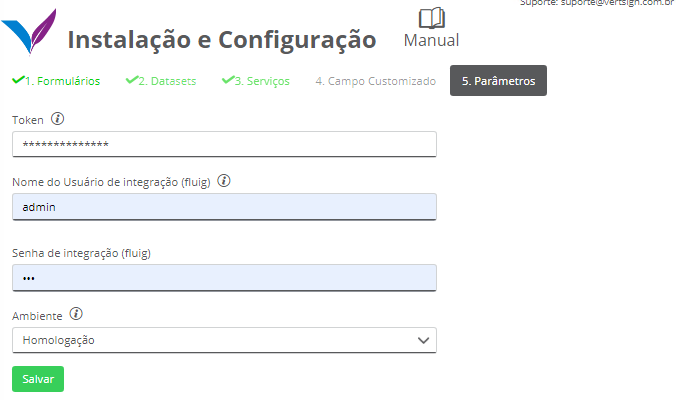
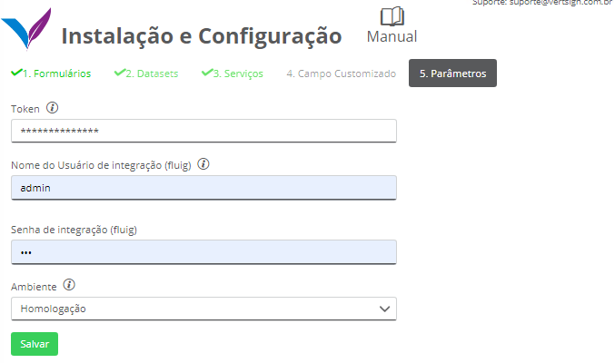
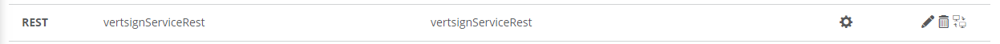
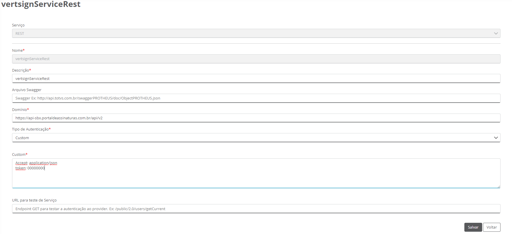
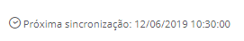

Parâmetros
Os parâmetros são obrigatórios na instalação a fim de definir todas as configurações iniciais necessárias para começar a utilizar o app. Abaixo encontra-se a descrição de cada campo:
Os parâmetros são obrigatórios na instalação a fim de definir todas as configurações iniciais necessárias para começar a utilizar o app. Abaixo encontra-se a descrição de cada campo:
O Token é uma informação de controle de acesso no Portal de Assinaturas Certisign. Na contratação do app Vertsign dois ambientes do Portal de Assinaturas Certisign são liberados: um ambiente de homologação e um ambiente de produção. Cada ambiente possui o seu respectivo token. O Token será enviado por email pela Vertsign para o administrador do sistema cadastrado na TOTVS. Caso a empresa não tenha recebido o token, favor encaminhar um email para contato@vertsign.com.br.
Usuário admin do fluig responsável pelas integrações.
Senha do usuário de integração.
Definir se a integração será feita no ambiente de homologação ou no ambiente de produção da Certisign.
Após preencher todos os campos e clicar em “Salvar”, o formulário de parâmetros gerais será atualizado com as novas informações e o serviço vertsignServiceRest será criado no fluig.
O campo token é utilizado para realizar as integrações entre o fluig e a Certisign. O serviço vertsignServiceRest é o responsável por fazer esta integração. Caso o token seja alterado, este serviço será removido e criado novamente com o novo token.
Os endereços abaixo devem ser liberados para que as integrações sejam realizadas:
https://api-sbx.portaldeassinaturas.com.br
https://api.portaldeassinaturas.com.br
Na última etapa da instalação deve ser definido nos Parâmetros um usuário administrador para realizar as integrações internas do fluig.
Caso o fluig esteja configurado com o Identity, o campo “Senha de integração (fluig)” deve ser preenchido com a senha do Identity do usuário de integração.
Caso a senha do usuário de integração seja alterada, deve-se lembrar de alterar também nos parâmetros.
Outro cuidado que deve ser tomado é caso o usuário de integração seja desativado da plataforma. Nesse caso, deve-se acessar os parâmetros do app e definir outro usuário.
A integração entre fluig e Certisign ocorrem através de datasets sincronizados que verificam o status da assinatura dos documentos e realizam as integrações. Por padrão esses scripts são executados uma vez por dia, mas também podem ser executados manualmente acessado o Agendador de Tarefas no Painel de Controle. O fluig permite também alterar esse tempo de agendamento.
Os datasets responsáveis por realizar o envio/download dos documentos são:
Após a instalação dos datasets, as rotinas de integração serão configuradas para executar uma vez por dia. Essas rotinas são responsáveis por enviar e baixar os documentos do Portal de Assinaturas da Certisign.
Mas existe a possibilidade de alterar a frequência de execução. Abaixo será explicado como o usuário administrador da plataforma pode realizar essa alteração:
Agora a rotina que baixa os documentos assinados do Portal de Assinaturas da Certisign será executada com a frequência determinada.
A data da próxima sincronização é exibida do lado superior direito do Quadro de Status como na imagem abaixo:
Após a aquisição do app, todas as funcionalidades de integração entre ECM e Certisign estarão disponíveis na plataforma. Caso haja a necessidade de implementar um processo que possui envio de documentos para assinatura, todas as funções necessárias para realizá-lo poderão ser reaproveitadas do app Vertsign. Ou seja, o componente Vertsign permite que o envio de documentos para assinatura através de um processo possa ser realizado. Para isso, é necessário seguir algumas etapas. Abaixo está detalhado um exemplo de como enviar um documento para assinatura através de um processo.